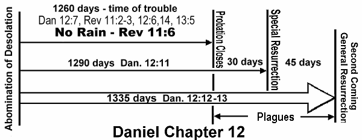

On the Brink of the End?
Daniel 11│Daniel 12│Chart│E.G. White quotes
DANIEL CHAPTER 11
The Empire of Persia
Dan 11:1 Also I in the first year of Darius the Mede, even I, stood to confirm and to strengthen him.
Dan 11:2 And now will I show thee the truth. Behold, there shall stand up yet three kings in Persia; and the fourth shall be far richer than they all: and by his strength through his riches he shall stir up all against the realm of Grecia.
The Empire of Greece (Alexander the Great)
Dan 11:3 And a mighty king shall stand up, that shall rule with great dominion, and do according to his will.
Dan 11:4 And when he shall stand up, his kingdom shall be broken, and shall be divided toward the four winds of heaven; and not to his posterity, nor according to his dominion which he ruled: for his kingdom shall be plucked up, even for others beside those.
The Empire of Pagan Imperial Rome
Dan 11:19 Then he shall turn his face toward the fort of his own land: but he shall stumble and fall, and not be found [Julius Caesar].
Dan 11:20 Then shall stand up in his estate a raiser of taxes [Caesar Augustus, Lk. 2:1] in the glory of the kingdom: but within few days he shall be destroyed, neither in anger, nor in battle.
Dan 11:21 And in his estate shall stand up a vile person [Tiberius Caesar], to whom they shall not give the honour of the kingdom: but he shall come in peaceably, and obtain the kingdom by flatteries.
Dan 11:22 And with the arms of a flood shall they be overflown from before him [destruction of Jerusalem - Dan 9:26], and shall be broken; yea, also the prince of the covenant [crucifixion of Christ].
Rise of Papal Rome, the Dark Ages and Crusader wars.
Dan 11:23 And after the league made with him he shall work deceitfully: for he shall come up, and shall become strong with a small people.
Dan 11:24 He shall enter peaceably even upon the fattest places of the province; and he shall do that which his fathers have not done, nor his fathers' fathers; he shall scatter among them the prey, and spoil, and riches: yea, and he shall forecast his devices against the strong holds, even for a time.
Dan 11:25 And he shall stir up his power and his courage against the king of the south with a great army; and the king of the south shall be stirred up to battle with a very great and mighty army; but he shall not stand: for they shall forecast devices against him.
Dan 11:26 Yea, they that feed of the portion of his meat shall destroy him, and his army shall overflow: and many shall fall down slain.
Dan 11:27 And both these kings' hearts shall be to do mischief, and they shall speak lies at one table; but it shall not prosper: for yet the end shall be at the time appointed.
Dan 11:28 Then shall he return into his land with great riches; and his heart shall be against the holy covenant; and he shall do exploits, and return to his own land.
Dan 11:29 At the time appointed he shall return, and come toward the south; but it shall not be as the former, or as the latter.
Papal Rome: Apostasy, Paganism and Idolatry enter the Christian Church:
Dan 11:30 For the ships of Chittim shall come against him: therefore he shall be grieved, and return, and have indignation against the holy covenant: so shall he do; he shall even return, and have intelligence with them that forsake the holy covenant [papal Rome].
Dan 11:31 And arms [state militaries] shall stand on his [the papacy] part [An early example: Christian Emperor Justinian's general Belisarius vanquishes the foes of the papacy], and they [Eastern and Western Christianity] shall pollute the sanctuary of strength, and shall take away thedaily sacrificeperpetual covenant [Sabbath], and they shall place the abomination that maketh desolate [Sunday].
Dan 11:32 And such as do wickedly against the covenant shall he corrupt by flatteries: but the people that do know their God shall be strong, and do exploits.
Yet the Gospel is Proclaimed During Persecution:
Dan 11:33 And they that understand among the people shall instruct many [the Gospel commission to the church - Matt. 28:19]: yet they shall fall by the sword, and by flame [burning at the stake], by captivity [imprisonment], and by spoil [property confiscation], many days [persecution during the 1260 days/years of Dan. 7:25; 12:7 and Rev. 12:6,14; 13:5 - 538 A.D. to 1798 A.D.].
Dan 11:34 Now when they shall fall, they shall be holpen with a little help: but many shall cleave to them with flatteries [apostasy enters the church, v. 32].
Dan 11:35 And some of them of understanding shall fall, to try them, and to purge, and to make them white, even to the time of the end [1798 A.D.]: because it is yet for a time appointed.
The Antichrist Little Horn Power Prospers in Apostasy:
Dan 11:36 And the king [Antichrist / little horn / papacy] shall do according to his will; and he shall exalt himself, and magnify himself above every god, and shall speak marvellous things against the God of gods, and shall prosper till the indignation be accomplished: for that that is determined shall be done. [see Dan. 7:8,25, 8:9-11, Rev. 13:3-7]
Dan 11:37 Neither shall he regard the God of his fathers [God the Father], nor the desire of women [to give birth to the Messiah, i.e., God the Son], nor regard any god: for he shall magnify himself above all [blasphemy].
Dan 11:38 But in his estate shall he honour the God of forces [civil state power]: and a god whom his fathers knew not shall he honour with gold, and silver, and with precious stones, and pleasant things [gross idolatry].
Dan 11:39 Thus shall he do in the most strong holds with a strange god [See Rev. 17:2], whom he shall acknowledge and increase with glory: and he shall cause them to rule over many, and shall divide the land for gain.
Apparent Successes of King of the North End in Final Defeat.
Dan 11:40 And at the time of the end shall the king of the south push at him [King of the North]: and the king of the north shall come against him [King of the South] like a whirlwind, with chariots, and with horsemen, and with many ships; and he shall enter into the countries, and shall overflow and pass over.
Dan 11:41 He [King of the North] shall enter also into the glorious land, and many countries shall be overthrown: but these shall escape out of his hand, even Edom, and Moab, and the chief of the children of Ammon.
Dan 11:42 He [King of the North] shall stretch forth his hand also upon the countries: and the land of Egypt shall not escape.
Dan 11:43 But he [King of the North] shall have power over the treasures of gold and of silver, and over all the precious things of Egypt: and the Libyans and the Ethiopians shall be at his steps.
Dan 11:44 But tidings out of the east and out of the north shall trouble him: therefore he [King of the North] shall go forth [retaliate] with great fury to destroy, and utterly to make away many.
Dan 11:45 And he [King of the north or Antichrist / little horn] shall plant the tabernacles of his palace between the seas in the glorious holy mountain; yet he shall come to his end, and none shall help him [the seventh plague].
The Antichrist / little horn power in Daniel and Revelation is without any doubt the papacy of the Roman Catholic Church, the Vatican. The "god whom his fathers knew not" is Catholic worship of the Blessed Virgin Mary, promoted today as Co-redeemer and Mediatrix of all graces, idolatrous statues of which are honored "with gold, and silver, and with precious stones, and pleasant things". The willful king of verse 36 is presumably called the King of the North in verses 40-45 [Antichrist / little horn / papacy], who gains increased power and influence in the world. However, the King of the North is angered by a message from the east and the north. The message from the east may refer to Revelation 7:2-
Rev 7:2 And I saw another angel ascending from the east, having the seal of the living God: and he cried with a loud voice to the four angels, to whom it was given to hurt the earth and the sea,
Rev 7:3 Saying, Hurt not the earth, neither the sea, nor the trees, till we have sealed the servants of our God in their foreheads.
The tidings from the north in verse may refer to mount Zion:
Psa 48:2 Beautiful for situation, the joy of the whole earth, is mount Zion, on the sides of the north, the city of the great King.
So the tidings that anger the King of the North would be the outpouring of the latter rain of the Holy Spirit on those proclaiming the gospel message of the 3 angels in Revelation 14, and the angel in Revelation 18. The planting of the tabernacles of his palace would be the combining of church (tabernacle) and state (palace), with the resulting death decree for non-compliance with the mark of the beast (Rev. 13:15). This effort ultimately ends in disastrous defeat for the King of the North (Rev. 17:16)
DANIEL CHAPTER 12
[Event #1] A Time of Trouble: End of Judgment (Close of Probation).
Dan 12:1 And at that time shall Michael stand up [end of judgment/close of probation], the great prince which standeth for the children of thy people: and there shall be a time of trouble, such as never was since there was a nation even to that same time: ...
[Event #2] The Special Limited Resurrection and Glorification of the Righteous:
... and at that time thy people shall be delivered, every one that shall be found written in the book.
Dan 12:2 And many of them that sleep in the dust of the earth shall awake, some to everlasting life [the proclaimers of the three angels messages of Rev. 14], and some to shame and everlasting contempt [those who pierced Him - Rev. 1:7].
Dan 12:3 And they that be wise shall shine as the brightness of the firmament; [have glorified immortal bodies] and they that turn many to righteousness as the stars for ever and ever.
The First Question:
Dan 12:4 But thou, O Daniel, shut up the words, and seal the book, even to the time of the end: many shall run to and fro, and knowledge shall be increased.
Dan 12:5 Then I Daniel looked, and, behold, there stood other two, the one on this side of the bank of the river, and the other on that side of the bank of the river.
Dan 12:6 And one said to the man clothed in linen, which was upon the waters of the river, How long shall it be to the end of these wonders?
A Partial Answer [regarding Event #1]:
Dan 12:7 And I heard the man clothed in linen, which was upon the waters of the river, when he held up his right hand and his left hand unto heaven, and sware by him that liveth for ever that it shall be for a time, times, and an half [1260 days]; and when he [God the Father] shall have accomplished to scatter [distribute] the power [latter rain] of the holy people, all these things [testing / martyrdom of God's people] shall be finished [the close of probation].
Daniel repeats the Question:
Dan 12:8 And I heard, but I understood not: then said I, O my Lord, what shall be the end of these things?
The Second Answer [regarding Event #2] to Daniel's Question:
Dan 12:9 And he said, Go thy way, Daniel: for the words are closed up and sealed till the time of the end.
Dan 12:10 Many shall be purified, and made white, and tried; [the 144,000] but the wicked shall do wickedly: and none of the wicked shall understand; but the wise shall understand.
Dan 12:11 And from the time that thedaily sacrificeperpetual covenant [Sabbath] shall be taken away, and the abomination that maketh desolate set up [Sunday law: see Exo. 31:14, Lev. 26:31-36, 43, 2 Chr. 36:19-21 for previous desolation, which gives the context. See also Dan 9:2 and Dan 9:27], there shall be a thousand two hundred and ninety days [to the Special Resurrection and Glorification of the Righteous].
[Event #3] The General Resurrection of the Just [including Daniel] at the Second Coming:
Dan 12:12 Blessed is he that waiteth [from the Special Resurrection], and cometh to the thousand three hundred and five and thirty days.
Dan 12:13 But go thou thy way till the end be: for thou shalt rest, and stand in thy lot [be resurrected] at the end of the [1335] days. [1 Cor. 15:52]
Note Revelation 14:13-14.
Rev 14:13 And I heard a voice from heaven saying unto me, Write, Blessed are the dead which die in the Lord from henceforth: Yea, saith the Spirit, that they may rest from their labours; and their works do follow them.
Rev 14:14 And I looked, and behold a white cloud, and upon the cloud one sat like unto the Son of man, having on his head a golden crown, and in his hand a sharp sickle.
After the 3 angels' messages of Rev. 14 are proclaimed, a special group of people who have died are described as blessed. The next event, in verse 14, is the second coming. This blessed group of people, the proclaimers of the 3 angels' messages, are the same mentioned as resurrected in the special resurrection of Dan. 12:2-3, which happens at the 1290th day. Daniel 12:12 is saying this blessed group are given the privilege of witnessing events that lead up to and include the general resurrection at the second coming on the 1335th day.
The Abomination of Desolation mentioned in Dan. 12:11 begins the three time periods of 1260, 1290 and 1335 days, which run concurrently and are literal days.
.
E. G. White Quotes
In the Scriptures are presented truths that relate especially to our own time. To the period just prior to the appearing of the Son of man, the prophecies of Scripture point, and here their warnings and threatenings pre-eminently apply. The prophetic periods of Daniel, extending to the very eve of the great consummation, throw a flood of light upon events then to transpire. The book of Revelation is also replete with warning and instruction for the last generation. The beloved John, under the inspiration of the Holy Spirit, portrays the fearful and thrilling scenes connected with the close of earth's history, and presents the duties and dangers of God's people. None need remain in ignorance, none need be unprepared for the coming of the day of God. (RH, Sept 25, 1883 par. 6)
In the last days Satan will appear as an angel of light, with great power and heavenly glory, and claim to be the Lord of the whole earth. He will declare that the Sabbath has been changed from the seventh to the first day of the week; and as lord of the first day of the week he will present this spurious sabbath as a test of loyalty to him. Then will take place the final fulfillment of the Revelator's prophecy. [Rev. 13:4-18, quoted.] In connection with this scripture, the entire fourteenth chapter of Revelation should be studied much by God's people. Verses nine to eleven bring to view the special message of warning against worshiping the beast and his image, and receiving his mark in the forehead or in the hand. This warning is to be given to the world by those who are mentioned in the twelfth verse as keeping "the commandments of God, and the faith of Jesus."{19MR 282}The judgments of God are in the land. The wars and rumors of wars, the destruction by fire and flood, say clearly that the time of trouble, which is to increase until the end, is very near at hand. We have no time to lose. The world is stirred with the spirit of war. The prophecies of the eleventh of Daniel have almost reached their final fulfillment. (RH, November 24, 1904 par. 8) {LDE 12.1}
One thing will certainly be understood from the study of Revelation--that the connection between God and His people is close and decided. A wonderful connection is seen between the universe of heaven and this world. The things revealed to Daniel were afterward complemented by the revelation made to John on the Isle of Patmos. These two books should be carefully studied. Twice Daniel inquired, How long shall it be to the end of time?It was the Lion of the tribe of Judah who unsealed the book and gave to John the revelation of what should be in these last days. Daniel stood in his lot to bear his testimony which was sealed until the time of the end, when the first angel's message should be proclaimed to our world. These matters are of infinite importance in these last days; but while "many shall be purified, and made white, and tried," "the wicked shall do wickedly: and none of the wicked shall understand." How true this is! Sin is the transgression of the law of God; and those who will not accept the light in regard to the law of God will not understand the proclamation of the first, second, and third angel's messages. The book of Daniel is unsealed in the revelation to John, and carries us forward to the last scenes of this earth's history. {TM 114-115}"And I heard, but I understood not: then said I, O my Lord, what shall be the end of these things? And He said, Go thy way, Daniel: for the words are closed up and sealed till the time of the end. Many shall be purified, and made white, and tried; but the wicked shall do wickedly: and none of the wicked shall understand; but the wise shall understand. And from the time that the daily sacrifice shall be taken away, and the abomination that maketh desolate set up, there shall be a thousand two hundred and ninety days. Blessed is he that waiteth, and cometh to the thousand three hundred and five and thirty days. But go thou thy way till the end be: for thou shalt rest, and stand in thy lot at the end of the days." [Dan 12:8-13]
The people of God need to study what characters they must form in order to pass through the test and proving of the last days. Many are living in spiritual weakness and backsliding. They know not what they believe. Let us read and study the twelfth chapter of Daniel. It is a warning that we shall all need to understand before the time of the end. There are ministers claiming to believe the truth who are not sanctified through the truth. Unless a change comes in their lives, they will say, "My Lord delayeth His coming." {15MR 228.2 (1903)} {LDE 15.4}
All that God has in prophetic history specified to be fulfilled in the past, has been, and all that is yet to come in its order will be. Daniel, God's prophet, stands in his place. John stands in his place. In the Revelation, the Lion of the tribe of Judah has opened to the students of prophecy the book of Daniel, and thus is Daniel standing in his place. He bears his testimony, that which the Lord revealed to him in vision of the great and solemn events which we must know as we stand on the very threshold of their fulfillment. {1MR 47.2 (1896)}
Prophecy has been fulfilling, line upon line. The more firmly we stand under the banner of the third angel's message, the more clearly shall we understand the prophecy of Daniel; for the Revelation is the supplement of Daniel. The more fully we accept the light presented by the Holy Spirit through the consecrated servants of God, the deeper and surer, even as the eternal throne, will appear the truths of ancient prophecy; we shall be assured that men of God spake as they were moved upon by the Holy Ghost. Men must themselves be under the influence of the Holy Spirit in order to understand the Spirit's utterances through the prophets. These messages were given, not for those that uttered the prophecies, but for us who are living amid the scenes of their fulfillment. {17MR 19.1 (1896)
Increased light will shine upon all the grand truths of prophecy, and they will be seen in freshness and brilliancy because the bright beams of the Sun of Righteousness will illuminate the whole. ...
Brother Hewit from Dead River was there. He came with a message to the effect that the destruction of the wicked and the sleep of the dead was an abomination within a shut door that a woman, Jezebel, a prophetess had brought in and he believed that I was that woman Jezebel. We told him of some of his errors in the past, that the 1335 days were ended and numerous errors of his. It had but little effect. His darkness was felt upon the meeting and it dragged. {6MR 251.2 (1850)}
Brethren and sisters, the Lord wants to impart to us increased light. He desires that we shall have distinct revealings of His glory, that ministers and people shall become strong in His strength. When the angel was about to unfold to Daniel the intensely interesting prophecies to be recorded for us who are to witness their fulfillment, the angel said, "Be strong, yea, be strong." We are to receive the very same glory that was revealed to (515) Daniel, because it is for God's people in these last days, that they may give the trumpet a certain sound.{1888 514.1,2}
When ye therefore shall see the abomination of desolation, spoken of by Daniel the prophet [Dan 12:11], stand in the holy place, (whoso readeth, let him understand:) then let them which be in Judaea flee into the mountains. Matt. 24:15, 16.
The time is not far distant, when, like the early disciples, we shall be forced to seek a refuge in desolate and solitary places. As the siege of Jerusalem by the Roman armies was the signal for flight to the Judean Christians, so the assumption of power on the part of our nation [the United States] in the decree enforcing the papal sabbath will be a warning to us. It will then be time to leave the large cities, preparatory to leaving the smaller ones for retired homes in secluded places among the mountains. {Maranatha 180.1} {5T 464-465}
As the approach of the Roman armies was a sign to the disciples of the impending destruction of Jerusalem, so may this apostasy be a sign to us that the limit of God's forbearance is reached, that the measure of our nation's iniquity is full, and that the angel of mercy is about to take her flight, never to return. The people of God will then be plunged into those scenes of affliction and distress which prophets have described as the time of Jacob's trouble. The cries of the faithful, persecuted ones ascend to heaven. And as the blood of Abel cried from the ground, there are voices also crying to God from martyrs' graves, from the sepulchers of the sea, from mountain caverns, from convent vaults: "How long, O Lord, holy and true, dost Thou not judge and avenge our blood on them that dwell on the earth?" {5T 451.2}The Saviour's prophecy concerning the visitation of judgments upon Jerusalem is to have another fulfillment, of which that terrible desolation was but a faint shadow. In the fate of the chosen city we may behold the doom of a world that has rejected God's mercy and trampled upon His law. Dark are the records of human misery that earth has witnessed during its long centuries of crime. The heart sickens, and the mind grows faint in contemplation. Terrible have been the results of rejecting the authority of Heaven. But a scene yet darker is presented in the revelations of the future. {GC 36}
After speaking of the end of the world, Jesus comes back to Jerusalem, the city then sitting in pride and arrogance, and saying, "I sit a queen, and shall see no sorrow" (see Rev. 18:7). As His prophetic eye rests upon Jerusalem, He sees that as she was given up to destruction, the world will be given up to its doom. The scenes that transpired at the destruction of Jerusalem will be repeated at the great and terrible day of the Lord, but in a more fearful manner. . . . {3SM 417}
The above quotes indicate that both Daniel 11 and 12 were still unfulfilled in 1904, and therefore were not fully understood. That leads me to believe that Daniel 11 and 12 (combined) give a continuous chronological history of events that end with the second coming, therefore the 1260, 1290 and 1335 days in Daniel 12 are assumed to be literal days, not symbolic of years, and relate directly to events immediately prior to the second coming, as described in Daniel 12.
However, the following quote of Ellen White is often presented as proof that the time prophecies of Daniel 12 are already fulfilled:
SDA Commentary, Vol. 7, pg. 971
Revelation Chapter 10
1–11 (ch. 14:6–12; Dan. 12:4–13). No Less a Person Than Christ.—The mighty angel who instructed John was no less a personage than Jesus Christ. Setting His right foot on the sea, and His left upon the dry land, shows the part which He is acting in the closing scenes of the great controversy with Satan. This position denotes His supreme power and authority over the whole earth. The controversy has waxed stronger and more determined from age to age, and will continue to do so, to the concluding scenes when the masterly working of the powers of darkness shall reach their height. Satan, united with evil men, will deceive the whole world and the churches who receive not the love of the truth. But the mighty angel demands attention. He cries with a loud voice. He is to show the power and authority of His voice to those who have united with Satan to oppose the truth.
After these seven thunders uttered their voices, the injunction comes to John as to Daniel in regard to the little book: "Seal up those things which the seven thunders uttered." These relate to future events which will be disclosed in their order. Daniel shall stand in his lot at the end of the days. John sees the little book unsealed. Then Daniel’s prophecies have their proper place in the first, second, and third angels’ messages to be given to the world. the unsealing of the little book was the message in relation to time.
The books of Daniel and the Revelation are one. One is a prophecy, the other a revelation; one a book sealed, the other a book opened. John heard the mysteries which the thunders uttered, but he was commanded not to write them.
The special light given to John which was expressed in the seven thunders was a delineation of events which would transpire under the first and second angels’ messages. It was not best for the people to know these things, for their faith must necessarily be tested. In the order of God most wonderful and advanced truths would be proclaimed. The first and second angels’ messages were to be proclaimed, but no further light was to be revealed before these messages had done their specific work. This is represented by the angel standing with one foot on the sea, proclaiming with a most solemn oath that time should be no longer.
This time, which the angel declares with a solemn oath, is not the end of this world’s history, neither of probationary time, but of prophetic time, which should precede the advent of our Lord. That is, the people will not have another message upon definite time. After this period of time, reaching from 1842 to 1844, there can be no definite tracing of the prophetic time. The longest reckoning reaches to the autumn of 1844.
The angel’s position, with one foot on the sea, the other on the land, signifies the wide extent of the proclamation of the message. It will cross the broad waters and be proclaimed in other countries, even to all the world. The comprehension of truth, the glad reception of the message, is represented in the eating of the little book. The truth in regard to the time of the advent of our Lord was a precious message to our souls (MS 59, 1900).
This commentary is regarding Revelation 10, in particular:
Rev 10:6 And sware by him that liveth for ever and ever, who created heaven, and the things that therein are, and the earth, and the things that therein are, and the sea, and the things which are therein, that there should be time no longer:
I would propose that should be interpreted as "that there should be [prophetic] time no longer", meaning that the day for a year principle of prophetic time ends with the 2300 years in 1844, and that the time periods of Daniel 12 are therefore literal days, which as Ellen White says above - "Daniel’s prophecies have their proper place in the first, second, and third angels’ messages to be given to the world. the unsealing of the little book was the message in relation to time." In other words, Daniel 11 and 12 are only understood and fulfilled as literal days when the 3 angel's messages are being proclaimed, which is after 1844.
There is precedence for time prophecies that do not use the day for a year principle. Examples are the 70 year prophecy of Jeremiah 25:11-12, and 29:10, and the 7 times of Daniel 4:16, 23, 25, and 32.
Ellen White in Great Controversy gives details of end time events that I believe support the conclusion that the time prophecies of Daniel 12 are literal days and yet future.
OBSERVATIONS and QUESTIONS
The purpose of recognizing the abomination of desolation is that it signals a very urgent message to Christians to flee the cities for the remote uninhabited areas, to avoid the imminent crisis of violence and destruction in the densely populated wicked cities.
Ellen White never explicitly defined or applied the time prophecies of Daniel 12, and in 1910 stated flatly that she had not been given any light on the "daily" of Daniel 8.
Ellen White mentions only 2 fulfillments of the abomination of desolation. The first was the siege of Jerusalem in 70 A.D., which was a "faint shadow" of the second or antitypical fulfillment, the decree of a national Sunday law by the U.S. government. She makes absolutely no mention of Clovis or 508 A.D.
To accept the 1290 day prophecy in Dan 12:11 as ending in 1798 A.D. is to say that Daniel never mentions the major antitypical fulfillment of the abomination of desolation immediately prior to the close of probation (Dan. 12:1), and that Daniel never says anything further about "times and laws" introduced in Dan 7:25, although chapters 8 and 11 repeat and enlarge on chapter 7. Instead, it applies Dan. 12:11 to 508 A.D. I ask, if this is so, just who heeded the warning to flee the cities to escape the imminent violence and destruction in 508, as happened in 70 A.D.? Why would the conversion of this rather obscure French King be the intended fulfillment and not the major fulfillment so clearly explained by Ellen White?
Great Controversy
Events immediately prior to the 1260 days of Daniel 12:7
Chapter 35, Liberty of Conscience Threatened, pgs. 563-581.
Chapter 36, The Impending Conflict, pgs. 582-592.
Sabbath keepers denounced, Sunday observance enforced, pg. 592.
Chapter 37, The Scriptures a Safeguard, pgs. 593-602.
The 1260 days of Daniel 12:7
Chapter 38, The Final Warning, pgs. 603-612.
Come out of her my people, pg. 604.
Sabbath keepers imprisoned, pg. 608.
Chapter 39, The Time of Trouble, pgs. 613-634.
Close of probation, pg. 613.
Satan appears as Christ, pg. 624.
Decree issued against commandment keepers, pg. 626.
7 last Plagues begin, pg. 627.
On the 1290th day of Daniel 12:11
Chapter 40, God's People Delivered, pgs. 635-640 (to 3rd paragraph).
Voice of God from heaven says "It is done", pg. 636.
Great hailstones fall, pg. 637.
Special limited resurrection, pg. 637.
Tablets of Ten commandments seen in the sky, pg. 639.
Voice of God declares the day and hour of Christ's coming, pg. 640.
On the 1335th day of Daniel 12:12
Chapter 40, God's People Delivered, pgs. 640 (last paragraph) - 652.
The second coming, pg. 640 (last paragraph).
The general resurrection of saints, pg. 644.
Chapter 41, Desolation of the Earth, pgs. 653-661.
Daniel 11│Daniel 12│Chart│E.G. White quotes
http://biblelight.net